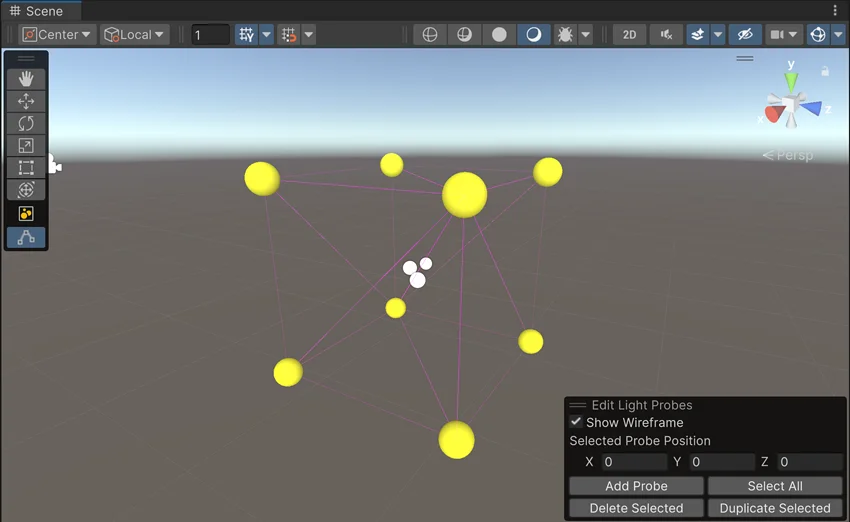
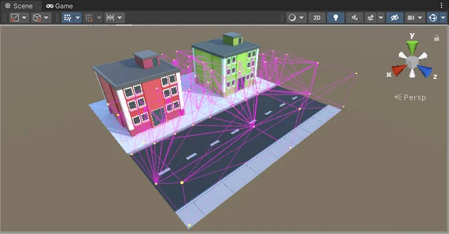
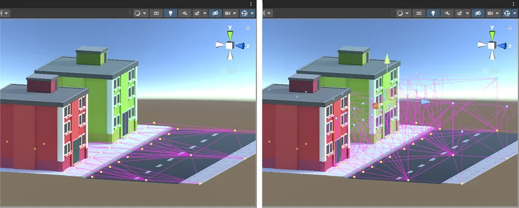

To place Light Probes in your Scene, you must use a GameObject with a Light Probe Group component attached. You can add a Light Probe Group component from the menu: Component > Rendering > Light Probe Group.
You can add the Light Probe Group component to any GameObject in the Scene. However, it’s good practice to create a new empty GameObject (menu: GameObject > Create Empty) and add it to that, to decrease the possibility of accidentally removing it from the Project.
To move, add or remove Light Probes in a Light Probe Group, do the following:
When editing a Light Probe Group, you can manipulate individual Light Probes in a similar way to GameObjects. However, Light Probes are not GameObjects; they are a set of points in the Light Probe Group component.
When you begin editing a new Light Probe Group, you start with a default formation of eight probes arranged in a cube, as shown below:

You can use the controls in the Edit Light Probe Group tool to add new probe positions to the group. The probes appear in the Scene as yellow spheres which you can position in the same way as GameObjects. You can also select and duplicate individual probes or in groups, using the keyboard shortcuts for duplicating (Ctrl+D or Cmd+D), or copying and pasting.
Unlike lightmaps, which usually have a continuous resolution across the surface of an object, the resolution of the Light Probe information depends on how closely packed you choose to position the Light Probes.
To optimise the amount of data that Light Probes store, and the amount of computation done while the game is playing, you should generally attempt to place as few Light Probes as possible. However, you should also place enough Light Probes so that changes in light from one space to another are recorded at a level that is acceptable to you. This means you might place Light Probes in a more condensed pattern around areas that have complex or highly contrasting light, and you might place them in a much more spread out pattern over areas where the light does not significantly change.

In the example above, the Light Probes are placed more densely near and between the buildings where there is more contrast and color variation, and less densely along the road, where the lighting does not significantly change.
The simplest approach to positioning Light Probes is to arrange them in a regular 3D grid pattern. While this setup is simple and effective, it is likely to consume more memory than necessary, and you may have lots of redundant Light Probes. For example, in the Scene above, if there were lots of Light Probes placed along the road it would be a waste of resources. The light does not change much along the length of the road, so many Light Probes would be storing almost identical lighting data to their neighbouring Light Probes. In situations like this, it is much more efficient to interpolate this lighting data between fewer, more spread-out, Light Probes.
Light Probes individually do not store a large amount of information. From a technical perspective, each probe is a spherical, panoramic HDR image of the view from the sample point, encoded using Spherical Harmonics L2 which is stored as 27 floating point values. However, in large Scenes with hundreds of Light Probes they can add up, and having unnecessarily densely packed Light Probes can result in large amounts of wasted memory in your game.
Even if your gameplay takes place on a 2D plane (for example, cars driving around on a road surface), your Light Probes must form a 3D volume.
This means you should have at least two vertical “layers” of points in your group of Light Probes.
In the example below, you can see on the left the Light Probes are arranged only across the surface of the ground. This does not result in good lighting because the Light Probe system cannot calculate sensible tetrahedral volumes from the Light Probes.
On the right, the Light Probes are arranged in two layers, some low to the ground and others higher up, so that together they form a 3D volume made up of lots of individual tetrahedra. This is a good layout.

Enlighten Realtime Global Illumination makes it possible for moving lights to cast dynamically bounced light on static GameObjects.
When you use Light Probes along with Enlighten Realtime Global Illumination, it is also possible for moving lights to cast dynamic bounced light on moving GameObjects. The quality of the resulting lighting depends on how your Light Probes are positioned, and therefore it is important to position them carefully.
A Light Probe captures the indirect lighting at its position in space. In order to faithfully capture the lighting environment, you must place more probes in areas where you expect more variation in the lighting. For example, you may need many probes in areas with moving lights or many occluders. In areas with little or no lighting variation, you can place fewer probes to save on memory and computation resources.
Normally only a few Light Probes are needed in large areas of static light. However, if you plan to have moving lights within this area of static light, and you want moving objects to receive accurate bounced light from these moving lights, you need a dense network of Light Probes within this area to provide sufficient accuracy. The size and range of your lights, how fast these lights move, and the size(s) of the moving objects receiving dynamic light determine how you space your Light Probes.
LightProbeGroup